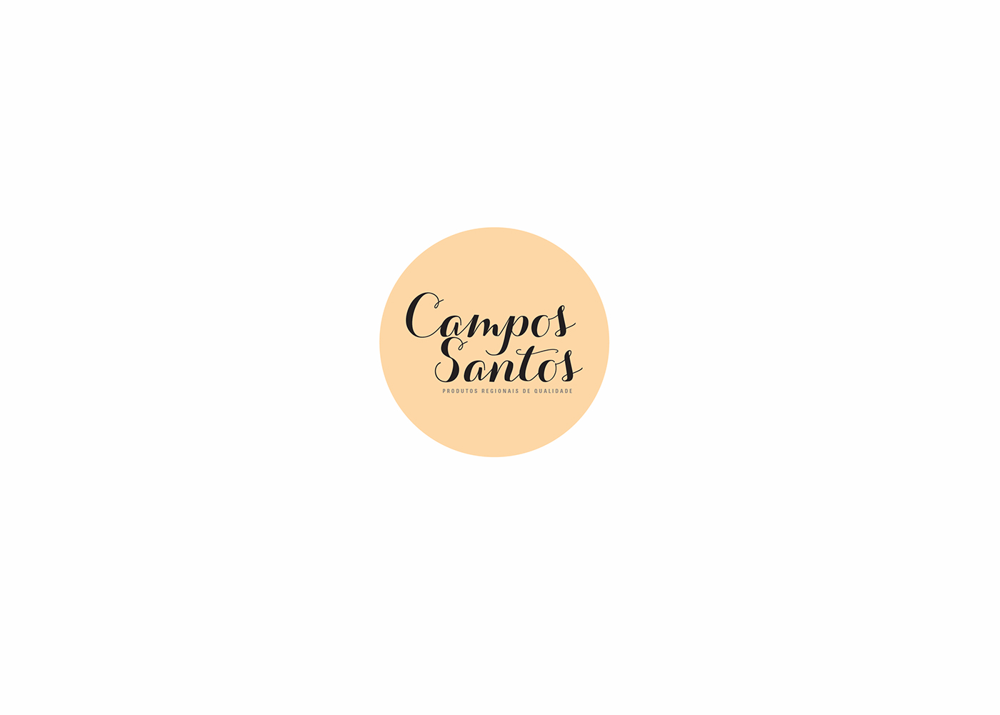
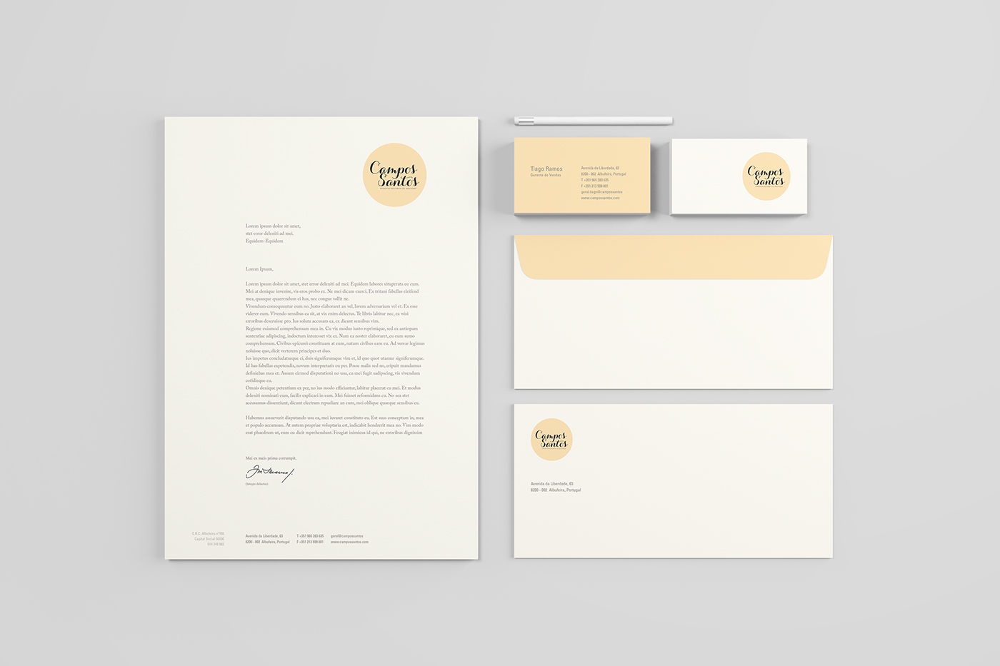
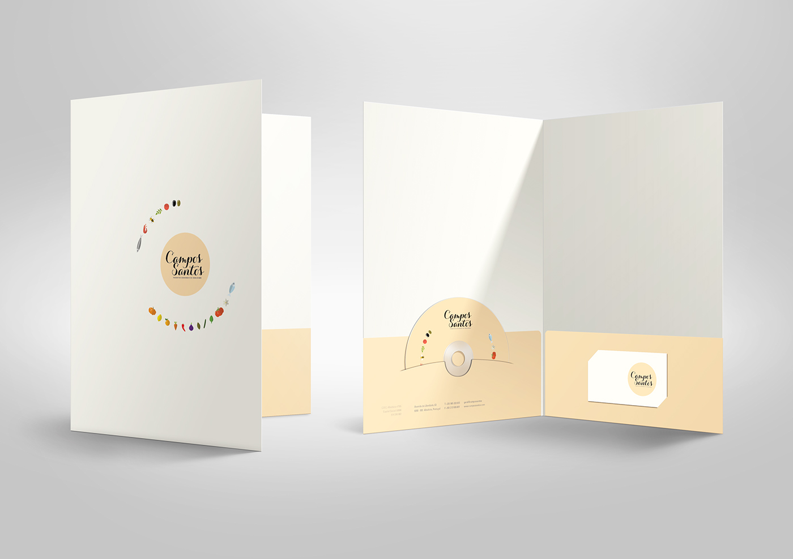
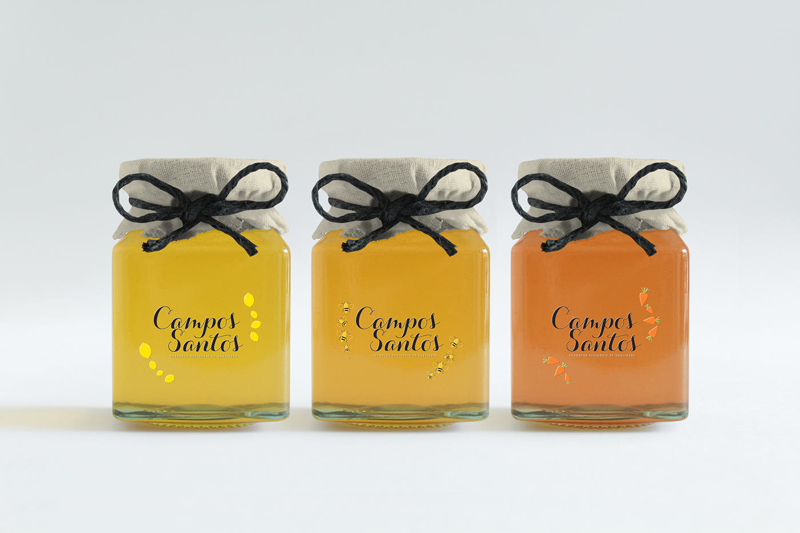
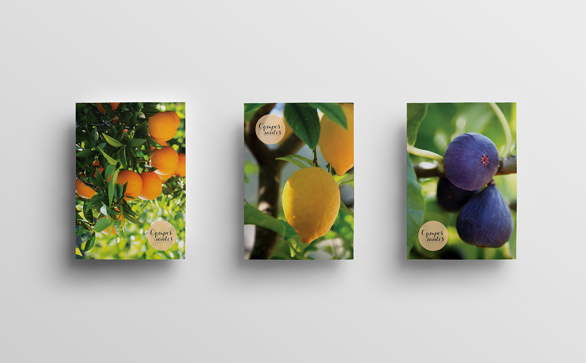
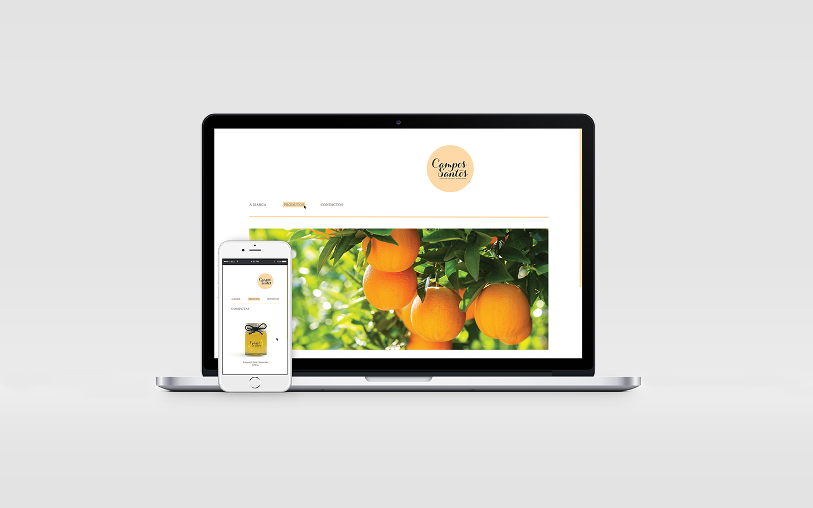
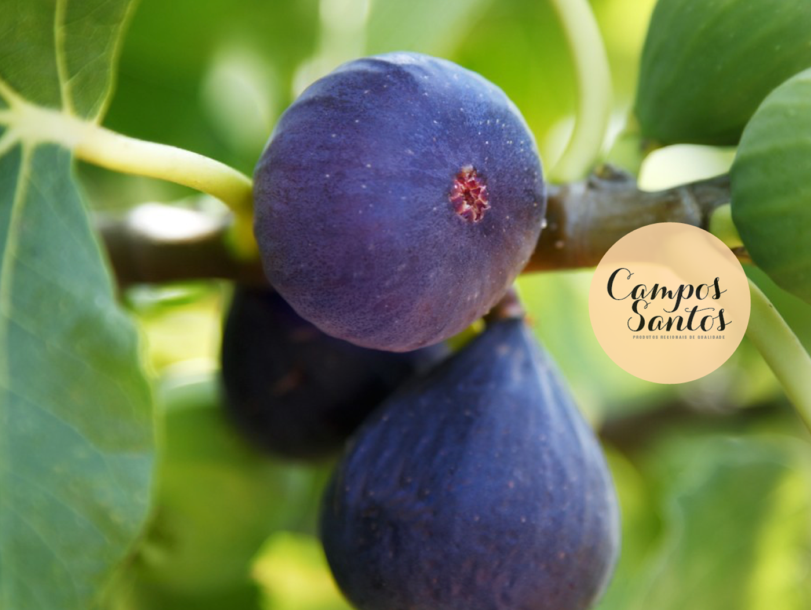

Promotional Image
Main Signature
Stationery Mockup
Stationery Mockup with composition with iconography
Product application - Mockup
Flyers Mockup
Website application - Mockup
Promotional Image
The final project of my 3rd year was the rebranding of an already existing brand. I chose the brand Campos Santos, that specialises in organic regional products with local origins, located in Albufeira. In order to capture the regional, organic, locally grown feel and also for it to feel close and familiar to the customer, I opted for a handmade solution. Therefore, the main element is the calligraphy, which is accompanied by a series of icons created for each product. The circle brings a sense of unity to the brand and the color palette chosen is in soft Pantone, to, again, reflect the organic feel of the brand.
© Faculdade de Belas Artes da Universidade do Porto | 2016 | Portefólio Tânia Ramos